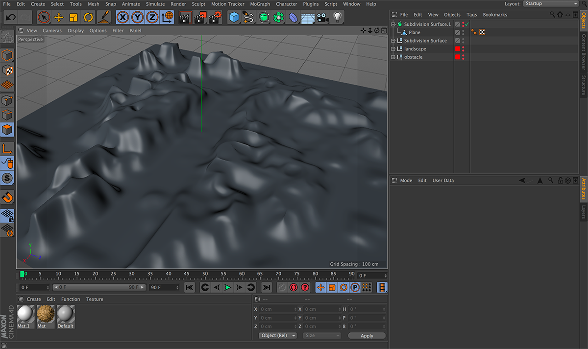
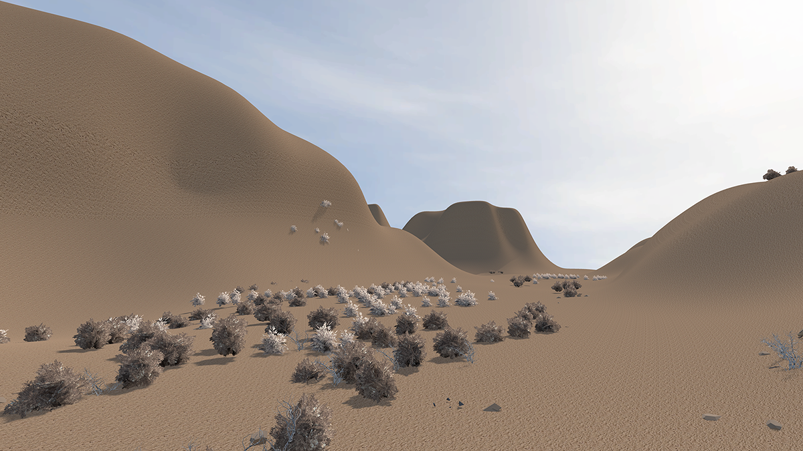
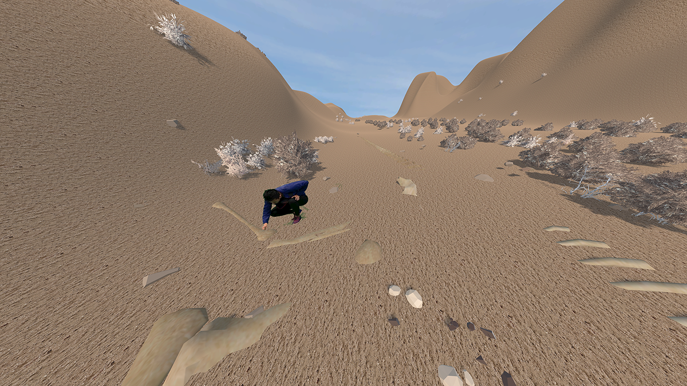
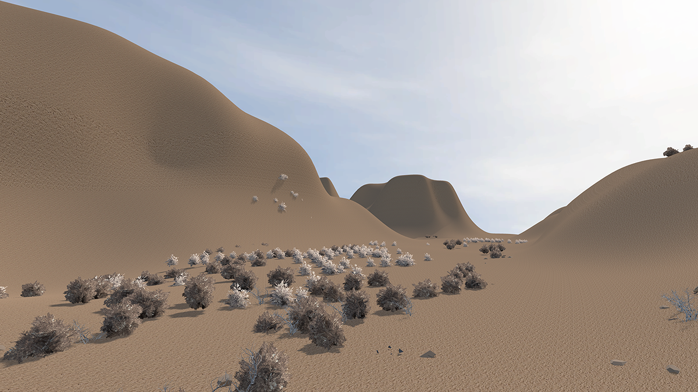
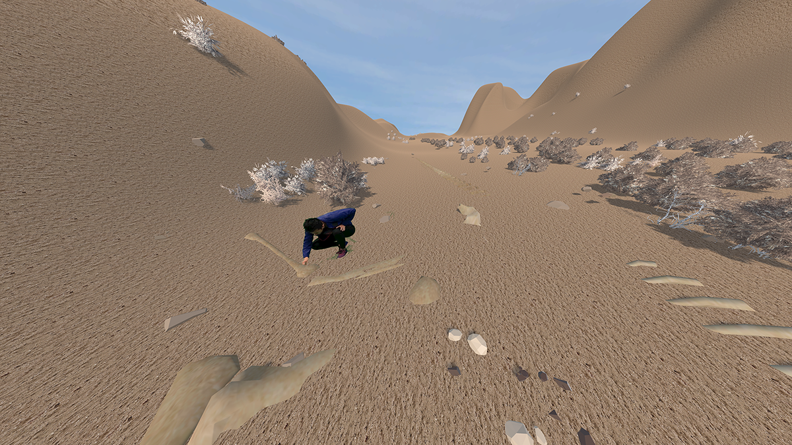

MotionXR is a speculation on the implications of how we might socialize, mingle, interrupt, produce, and design shared experiences as technologies advance. This platform imagines a future that allows one to enter a virtual scene by synchronizing their body movement with the scene creator.
Context
This future will exist when mass adoption of this technology exists; MotionXR imagines and speculates scenarios of cultural assimilation. Extended reality (XR) currently refers to the merging of existing technologies, AR and VR. For the purposes of this project, we’re defining XR as an imagined future that does not exist today, but is based on the trajectory of AR and VR technologies where headsets are
Introduction & Motivation
Prototypes above are built in Unity3D. Although the limitations are present in the current VR technology (headset constraints and player visibility), the system still demonstrates the concept that a person is able to enter others' virtual environment by synchronizing their movements.
Possibilities/Unexpected Outcomes
The 3 scenarios above show the possibilities of where this platform can disrupt social shared experiences. The latter 2 possibilities are demonstrated in video format due to the immature untethered and multi-player VR technology.
Assets Creation
 


